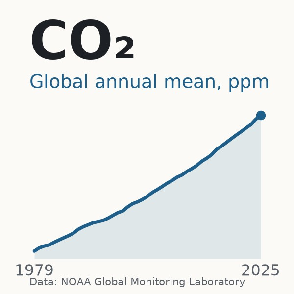

Environment
Greenhouse gas concentrations reached new records in 2025
The World Meteorological Organization reports that carbon dioxide, methane and nitrous oxide all reached record global concentrations in 2025, although carbon dioxide and methane rose more slowly than in 2024.

Abstract
Long-lived greenhouse gases accumulate in the atmosphere as a stock, so their concentrations rather than annual emissions determine the additional heat retained by the climate system[1]. The World Meteorological Organization reported on 27 October 2026 that carbon dioxide, methane and nitrous oxide all reached record global concentrations in 2025, at 426.8 ± 0.2 ppm, 1,948 ± 2 ppb and 339.1 ± 0.1 ppb, increases of 53%, 167% and 26% above 1750 levels[2,3]. Carbon dioxide rose by 2.8 ppm, down from 3.6 ppm in the preceding year, a moderation attributed to the recovery of land sinks and reduced fire emissions after the 2023 to 2024 El Niño[2,4]. Methane growth also slowed, with NOAA recording an increase of 4.77 ppb in 2025 against 17.69 ppb in 2021[3,5]. NOAA's Annual Greenhouse Gas Index reached 1.56 in 2025, meaning that long-lived greenhouse gases exert 56% more radiative forcing than in 1990, with carbon dioxide responsible for 66% of total forcing[1]. The findings matter because concentrations rise for as long as emissions exceed natural uptake by land and ocean, and only about 170 GtCO2 of the 1.5 °C carbon budget remained from the start of 2026[6]. The main limitations concern comparability and attribution: estimates of the 2025 carbon dioxide increase range from 2.06 to 2.8 ppm depending on definition and network, published values are revised, the causes of recent methane variability remain disputed, and the long-term resilience of the land sink is uncertain[2,6,7,8,9,10].
Key points
- Globally averaged carbon dioxide reached 426.8 ppm in 2025, 53% above the 1750 level, while methane reached 1,948 ppb and nitrous oxide 339.1 ppb[3].
- Carbon dioxide rose by 2.8 ppm between 2024 and 2025, down from 3.6 ppm a year earlier, reflecting land sink recovery and reduced fire emissions[2,4].
- NOAA's Annual Greenhouse Gas Index reached 1.56 in 2025, with total forcing of 3.587 W m-2, of which carbon dioxide contributed 66%[1].
- NOAA recorded methane growth of 4.77 ppb in 2025, down from 17.69 ppb in 2021, although the causes of recent variability remain disputed[5,10].
- Estimates of the 2025 carbon dioxide increase range from 2.06 ppm in NOAA's series to 2.8 ppm in the WMO's, largely because annual growth is defined differently[2,9].
- About 170 GtCO2 of the carbon budget for limiting warming to 1.5 °C remained from the start of 2026, roughly four years of emissions at 2025 levels[6].
References
- The NOAA Annual Greenhouse Gas Index (AGGI). National Oceanic and Atmospheric Administration; 2026. Primary data✓ Link checkedArchived copySupports the 2025 AGGI value of 1.56, total and per-gas radiative forcing, the 544 ppm CO2-equivalent, the 81% CO2 share of the increase and the uncertainty estimates. ↩
- Greenhouse gas levels once again reach record high. World Meteorological Organization; 27 Oct 2026. Press release✓ Link checkedArchived copySupports 2025 concentrations as percentages of 1750 levels, Barrett and Tarasova quotes, growth-rate history, the 2004 value of 377.5 ppm, methane and nitrous oxide sources and shares, SF6 and hydrogen findings, and the COP31 timing. ↩
- WMO Greenhouse Gas Bulletin - No. 22. World Meteorological Organization; 27 Oct 2026. Official report✓ Link checkedArchived copySupports the 2025 concentrations with uncertainties, the 53%, 167% and 26% increases over pre-industrial levels, and the moderation of growth rates. ↩
- Greenhouse gas levels set records in 2025, U.N. says, expressing alarm. CBS News; 27 Oct 2026. News report✓ Link checkedArchived copySupports the 2.8 ppm and 3.6 ppm annual increases and the Tarasova quote on fossil fuel carbon. ↩
- Trends in Atmospheric Methane. National Oceanic and Atmospheric Administration; 2026. Primary data✓ Link checkedArchived copySupports annual methane increases for 2020 to 2025, the June 2026 global value, the dry-air mole fraction definition and NOAA's global averaging method. ↩
- Global Carbon Budget 2025. Earth System Science Data; 13 May 2026. Peer-reviewed study✓ Link checkedArchived copySupports fossil emissions for 2024 and 2025, the land and ocean sinks, atmospheric growth, the 2.124 GtC per ppm conversion, the 2025 concentration of 425.6 ppm and the remaining 1.5 °C budget. ↩
- Carbon dioxide levels increase by record amount to new highs in 2024. World Meteorological Organization; 15 Oct 2025. Press release✓ Link checkedArchived copySupports the 3.5 ppm increase from 2023 to 2024, its causes, the 2004 value of 377.1 ppm, the 179 stations and the 2025 Tarasova quote on sinks. ↩
- Low latency carbon budget analysis reveals a large decline of the land carbon sink in 2023. National Science Review; 1 Dec 2024. Peer-reviewed study✓ Link checkedArchived copySupports the 2023 growth rate of 3.37 ppm, the land sink of 0.44 GtC, the regional drivers and the conclusion on record warmth. ↩
- Global Monitoring Laboratory - Carbon Cycle Greenhouse Gases: Annual Mean Global CO2 Growth Rates. National Oceanic and Atmospheric Administration; 2026. Primary data✓ Link checkedArchived copySupports NOAA global growth rates for 2023 to 2025 and its December-to-January calculation method. ↩
- Rapid shift in methane carbon isotopes suggests microbial emissions drove record high atmospheric methane growth in 2020-2022. Proceedings of the National Academy of Sciences; 21 Oct 2024. Peer-reviewed study✓ Link checkedArchived copySupports methane growth of 15.4 ppb a year in 2020 to 2022, the isotope record and the microbial attribution. ↩
Record concentrations and slower growth in 2025
The World Meteorological Organization (WMO) reported on 27 October 2026 that the three most important long-lived greenhouse gases reached record atmospheric concentrations in 2025[1,2]. Its Greenhouse Gas Bulletin No. 22 gives globally averaged surface concentrations of 426.8 ± 0.2 parts per million (ppm) for carbon dioxide, 1,948 ± 2 parts per billion (ppb) for methane and 339.1 ± 0.1 ppb for nitrous oxide[2]. These values are 53%, 167% and 26% above levels in 1750, the pre-industrial baseline[2]. The WMO press release expresses the same data as 153%, 267% and 126% of the 1750 level, a ratio rather than an increase[1,2].
The annual changes are more mixed than the records. Carbon dioxide rose by 2.8 ppm between 2024 and 2025, compared with 3.6 ppm between 2023 and 2024[3]. Methane rose by about 6 ppb and nitrous oxide by about 1.1 ppb[2,4]. The bulletin reports that carbon dioxide growth was lower than the anomalously high 2023 to 2024 increase but slightly above the decade's average, while methane growth was below both[2]. The bulletin was timed to inform negotiators at COP31 in Antalya, Türkiye, from 9 to 20 November 2026[1,5].
Accumulated gases and the added heat in the climate system
Emissions are an annual flow, whereas concentration is the stock that remains after land and ocean processes have removed part of what was emitted[6]. Concentrations therefore rise for as long as emissions exceed what land and ocean processes take up[6].
The warming effect is summarised as radiative forcing. NOAA's Annual Greenhouse Gas Index, set to 1.0 in 1990, reached 1.56 in 2025, meaning that long-lived greenhouse gases exert 56% more forcing than in 1990[7,8]. Total forcing was 3.587 W m-2, with carbon dioxide contributing 2.372 W m-2 (66%), methane 0.569 W m-2 (16%) and nitrous oxide 0.229 W m-2[7]. Carbon dioxide accounts for about 81% of the increase in forcing since 1990[1,7].
The WMO puts the 2025 global mean surface temperature at 1.44 ± 0.13 °C above the 1850 to 1900 average, and the eleven warmest years on record all occurred between 2015 and 2025[1,9]. The WMO's Secretary-General, Celeste Saulo, attributed this warmth, in a year that began and ended with La Niña, to accumulated greenhouse gases, an agency interpretation rather than a formal attribution study[9].
The El Niño surge and competing measures of carbon dioxide growth
The 2025 figures follow an exceptional year. The WMO reported in October 2025 that carbon dioxide had risen by 3.5 ppm from 2023 to 2024, the largest one-year increase since modern measurements began in 1957, attributing it to fossil emissions, more wildfires and weaker land and ocean sinks[10]. A preliminary study led by Piyu Ke estimated the 2023 global net land sink at 0.44 ± 0.21 GtC, the weakest since 2003, linking the loss to drought, fire and record warmth[11]. The Global Carbon Budget 2025 estimates the land sink at 1.9 ± 1.1 GtC in 2024 and projects a recovery to about 3.1 GtC in 2025[6]. Oksana Tarasova of the WMO attributed the more modest 2025 growth to recovering land sinks and reduced fire emissions, while stressing that 2.8 ppm remains a substantial addition[1,3].
Authoritative figures for 2025 differ by more than their stated uncertainties. NOAA's global series shows growth of 2.06 ± 0.08 ppm, the Met Office reports 2.68 ppm at Mauna Loa and the Global Carbon Budget projected 2.1 ppm[6,12,13]. Much of the difference reflects definitions, since NOAA measures change within a year whereas the WMO compares successive annual averages[1,13]. Every series nonetheless shows 2025 growth well below 2024 and still positive[6,12,13]. The Met Office notes average growth of 2.61 ppm a year between 2020 and 2025, against 1.33 to 1.79 ppm a year in illustrative IPCC pathways consistent with 1.5 °C[12].
Methane, nitrous oxide and gases of the energy transition
Methane accounts for about 16% of the warming effect of long-lived greenhouse gases, and about 65% of its emissions come from human activities[1]. NOAA's annual increases fell from 17.69 ppb in 2021 to 8.29 ppb in 2023 and 4.77 ppb in 2025[14]. A NOAA-led isotope study attributed the 2020 to 2022 surge mainly to microbial sources such as wetlands, agriculture and waste rather than fossil fuels, although it relied on a simplified box model[15]. The International Energy Agency estimates that the energy sector accounts for around 40% of human methane emissions[16].
Nitrous oxide has risen steadily, by about 10 ppb since 2016[2]. The Global Nitrous Oxide Budget found that human emissions rose by 40% between 1980 and 2020, mostly from agriculture, and that observed concentrations have exceeded projections under all CMIP6 scenarios[17].
Two further gases are tied to the energy transition. Sulphur hexafluoride, used in electrical switchgear, rose by a record amount in 2025 and by 249% between 1995 and 2025[1,18]. Hydrogen concentrations rose by 5.3% between 2010 and 2024, and a multi-model study estimated its 100-year global warming potential at 11.6 ± 2.8 through effects on methane, ozone and stratospheric water vapour[1,19].
Emissions trends, carbon budgets and remaining uncertainties
The Global Carbon Budget estimates that about 170 GtCO2 of the budget for limiting warming to 1.5 °C remained from the start of 2026, roughly four years of emissions at 2025 levels[6]. An independent analysis for Carbon Brief estimates that China's carbon dioxide emissions fell by 0.3% in 2025, while solar output rose by 43%[20]. The UN Environment Programme's Emissions Gap Report 2026 finds that full implementation of current national pledges is consistent with about 2.6 °C of warming this century, against 2.8 °C under current policies[21].
Interpretations differ mainly in emphasis. The WMO stresses steady accumulation and its long-lasting consequences[1]. A second reading emphasises the slower growth of carbon dioxide and methane, the apparent levelling of China's emissions and the rapid expansion of clean energy[2,14,20,21]. A third holds that growth remains well above 1.5 °C pathways, and that a slowdown driven by a temporary La Niña effect cannot be relied upon in future years[12]. These positions differ in timescale rather than in fact.
Important uncertainties remain. The size of the 2025 carbon dioxide increase depends on the definition used, and published values are routinely revised[13]. The 2025 recovery of the land sink is only a preliminary estimate, and the sink has been relatively stagnant since 2000 as climate variability and change offset CO2-driven growth[6]. Methane sources remain poorly constrained, and radiative forcing estimates carry an uncertainty of about 10%[7,22].
References
- Greenhouse gas levels once again reach record high. World Meteorological Organization; 27 Oct 2026. Press release✓ Link checkedArchived copySupports 2025 concentrations as percentages of 1750 levels, Barrett and Tarasova quotes, growth-rate history, the 2004 value of 377.5 ppm, methane and nitrous oxide sources and shares, SF6 and hydrogen findings, and the COP31 timing. ↩
- WMO Greenhouse Gas Bulletin - No. 22. World Meteorological Organization; 27 Oct 2026. Official report✓ Link checkedArchived copySupports the 2025 concentrations with uncertainties, the 53%, 167% and 26% increases over pre-industrial levels, and the moderation of growth rates. ↩
- Greenhouse gas levels set records in 2025, U.N. says, expressing alarm. CBS News; 27 Oct 2026. News report✓ Link checkedArchived copySupports the 2.8 ppm and 3.6 ppm annual increases and the Tarasova quote on fossil fuel carbon. ↩
- WMO Greenhouse Gas Bulletin - No. 21. World Meteorological Organization; 16 Oct 2025. Official report✓ Link checkedArchived copySupports the 2024 values of 423.9 ppm, 1,942 ppb and 338.0 ppb, the attribution of the 2024 increase and the key message on monitoring. ↩
- 2026 UN Climate Change Conference COP31. UNCCD; 2026. Other✓ Link checkedSupports the COP31 dates, the Antalya location and the Türkiye-Australia partnership. ↩
- Global Carbon Budget 2025. Earth System Science Data; 13 May 2026. Peer-reviewed study✓ Link checkedArchived copySupports fossil emissions for 2024 and 2025, the land and ocean sinks, atmospheric growth, the 2.124 GtC per ppm conversion, the 2025 concentration of 425.6 ppm and the remaining 1.5 °C budget. ↩
- The NOAA Annual Greenhouse Gas Index (AGGI). National Oceanic and Atmospheric Administration; 2026. Primary data✓ Link checkedArchived copySupports the 2025 AGGI value of 1.56, total and per-gas radiative forcing, the 544 ppm CO2-equivalent, the 81% CO2 share of the increase and the uncertainty estimates. ↩
- An Introduction to NOAA's Annual Greenhouse Gas Index. National Oceanic and Atmospheric Administration; 2026. Reference work✓ Link checkedArchived copySupports the 1990 baseline of the index and the comparison of 240 years with 35 years. ↩
- WMO confirms 2025 was one of warmest years on record. World Meteorological Organization; 14 Jan 2026. Press release✓ Link checkedSupports the 2025 temperature anomaly of 1.44 ± 0.13 °C, the dataset rankings, the 2023 to 2025 average and the Saulo quote. ↩
- Carbon dioxide levels increase by record amount to new highs in 2024. World Meteorological Organization; 15 Oct 2025. Press release✓ Link checkedArchived copySupports the 3.5 ppm increase from 2023 to 2024, its causes, the 2004 value of 377.1 ppm, the 179 stations and the 2025 Tarasova quote on sinks. ↩
- Low latency carbon budget analysis reveals a large decline of the land carbon sink in 2023. National Science Review; 1 Dec 2024. Peer-reviewed study✓ Link checkedArchived copySupports the 2023 growth rate of 3.37 ppm, the land sink of 0.44 GtC, the regional drivers and the conclusion on record warmth. ↩
- Mauna Loa carbon dioxide forecast for 2026. Met Office; 4 Feb 2026. Official report✓ Link checkedArchived copySupports the observed 2025 Mauna Loa rise of 2.68 ppm, the 2026 forecast, the La Niña effect and the comparison with 1.5 °C pathways. ↩
- Global Monitoring Laboratory - Carbon Cycle Greenhouse Gases: Annual Mean Global CO2 Growth Rates. National Oceanic and Atmospheric Administration; 2026. Primary data✓ Link checkedArchived copySupports NOAA global growth rates for 2023 to 2025 and its December-to-January calculation method. ↩
- Trends in Atmospheric Methane. National Oceanic and Atmospheric Administration; 2026. Primary data✓ Link checkedArchived copySupports annual methane increases for 2020 to 2025, the June 2026 global value, the dry-air mole fraction definition and NOAA's global averaging method. ↩
- Rapid shift in methane carbon isotopes suggests microbial emissions drove record high atmospheric methane growth in 2020-2022. Proceedings of the National Academy of Sciences; 21 Oct 2024. Peer-reviewed study✓ Link checkedArchived copySupports methane growth of 15.4 ppb a year in 2020 to 2022, the isotope record and the microbial attribution. ↩
- Global Methane Tracker 2026. International Energy Agency; 4 May 2026. Official report✓ Link checkedArchived copySupports the energy sector's share of around 40% of human methane emissions and its potential for reductions. ↩
- Global nitrous oxide budget (1980-2020). Earth System Science Data; 11 Jun 2024. Peer-reviewed study✓ Link checkedArchived copySupports the 40% rise in human N2O emissions, the agricultural emissions, the 2020 totals, the 2022 concentration and the comparison with CMIP6 scenarios. ↩
- Record greenhouse gases trap in more heat for the future. World Meteorological Organization; 27 Oct 2026. Official statement✓ Link checkedArchived copySupports Barrett's statement on every additional ppm, the 249% SF6 increase, the 3,200-year lifetime figure and comments on the energy transition. ↩
- A multi-model assessment of the Global Warming Potential of hydrogen. Communications Earth & Environment; 2023. Peer-reviewed studySite blocks checksSupports the hydrogen GWP100 of 11.6 ± 2.8, its indirect warming mechanisms and the sources of uncertainty. ↩
- Analysis: China's CO2 emissions have now been 'flat or falling' for 21 months. Carbon Brief; 12 Feb 2026. Analysis or opinion✓ Link checkedArchived copySupports the estimated 0.3% fall in China's 2025 CO2 emissions, its components and the growth in solar output. ↩
- UNEP Emissions Gap report 2026: The Point of Return. PBL Netherlands Environmental Assessment Agency; 21 Oct 2026. Official report✓ Link checkedArchived copySupports the required emission cuts, the NDC shortfall, the warming projections, the overshoot scenario and the carbon removal requirement. ↩
- Global methane budget 2000-2020. Earth System Science Data; 2025. Peer-reviewed study✓ Link checkedArchived copySupports top-down and bottom-up methane emission totals, the anthropogenic share, wetland emissions and the tracking of no-mitigation scenarios. ↩
Abstract
Long-lived greenhouse gases accumulate in the atmosphere as a stock, so their concentrations rather than annual emissions determine the additional heat retained by the climate system[1]. The World Meteorological Organization reported on 27 October 2026 that carbon dioxide, methane and nitrous oxide all reached record global concentrations in 2025, at 426.8 ± 0.2 ppm, 1,948 ± 2 ppb and 339.1 ± 0.1 ppb, increases of 53%, 167% and 26% above 1750 levels[2,3]. Carbon dioxide rose by 2.8 ppm, down from 3.6 ppm in the preceding year, a moderation attributed to the recovery of land sinks and reduced fire emissions after the 2023 to 2024 El Niño[2,4]. Methane growth also slowed, with NOAA recording an increase of 4.77 ppb in 2025 against 17.69 ppb in 2021[3,5]. NOAA's Annual Greenhouse Gas Index reached 1.56 in 2025, meaning that long-lived greenhouse gases exert 56% more radiative forcing than in 1990, with carbon dioxide responsible for 66% of total forcing[1]. The findings matter because concentrations rise for as long as emissions exceed natural uptake by land and ocean, and only about 170 GtCO2 of the 1.5 °C carbon budget remained from the start of 2026[6]. The main limitations concern comparability and attribution: estimates of the 2025 carbon dioxide increase range from 2.06 to 2.8 ppm depending on definition and network, published values are revised, the causes of recent methane variability remain disputed, and the long-term resilience of the land sink is uncertain[2,6,7,8,9,10].
1Record concentrations for all three main long-lived gases
The World Meteorological Organization (WMO), the United Nations agency for weather, climate and water, reported on 27 October 2026 that the three most important long-lived greenhouse gases reached record atmospheric concentrations in 2025[2,3]. According to its Greenhouse Gas Bulletin No. 22, the globally averaged surface concentration of carbon dioxide (CO2) was 426.8 ± 0.2 parts per million (ppm), methane (CH4) was 1,948 ± 2 parts per billion (ppb) and nitrous oxide (N2O) was 339.1 ± 0.1 ppb[3]. These units are dry-air mole fractions, which means the number of molecules of the gas in every million or every billion molecules of dry air[5]. The bulletin gives the 2025 values as increases of 53%, 167% and 26% above levels before 1750, the year it uses as its pre-industrial baseline[3].
The same numbers appear in a second form in much of the coverage, and readers comparing reports should keep the two apart. The WMO press release says CO2 stood at 153% of the 1750 level, methane at 267% and nitrous oxide at 126%, which expresses each concentration as a ratio to the baseline rather than as an increase[2]. A concentration 153% of the baseline is an increase of 53%, not of 153%[2,3]. The difference matters most for methane, whose concentration is now about two and two-thirds times its pre-industrial value[2,3].
The year-to-year changes tell a more mixed story than the records. Global CO2 rose by 2.8 ppm between 2024 and 2025, compared with 3.6 ppm between 2023 and 2024, according to the WMO figures as reported by Agence France-Presse[4]. The bulletin's summary says the CO2 increase was lower than the anomalously high 2023 to 2024 rise but slightly above the average of the last decade, while methane growth was below both[3]. Comparing the latest bulletin with the previous one, methane rose from 1,942 ppb in 2024 to 1,948 ppb in 2025, about 6 ppb, and nitrous oxide rose from 338.0 ppb to 339.1 ppb, about 1.1 ppb[3,11].
The WMO's Deputy Secretary-General, Ko Barrett, presented the findings as a continuation of a long trend. 'Another year, another new record. Greenhouse gases are trapping an unprecedented amount of heat in the atmosphere, providing energy for more extreme weather and associated risks to our economies and societies,' Barrett said[2]. Barrett added that CO2 'has a very long life-time and so will affect the global climate not just for years but for decades and even centuries'[2]. In a separate statement Barrett argued that 'every additional part per million matters because it traps additional heat', which strengthens heatwaves, storms and other weather hazards[12].
The timing was deliberate. The WMO said the bulletin was published to give scientific information to negotiators at COP31, the UN climate conference to be held in Antalya, Türkiye, from 9 to 20 November 2026[2,13]. Under arrangements agreed between the two governments, the incoming Turkish presidency is working 'in close partnership' with Australia[13]. The bulletin also covers two gases that are less familiar to the public: sulphur hexafluoride, an industrial gas used in electricity networks, and hydrogen, which is expected to play a larger part in the energy system[2]. Some outlets described these as emerging risks linked to the energy transition[14].
2Why concentrations rather than emissions measure the added heat
Emissions and concentrations measure different things, and the distinction is central to reading the bulletin. Emissions are a flow: the quantity of gas released in a year. Concentration is a stock: the amount that builds up in the air after natural processes have removed part of what was emitted[6]. The Global Carbon Project, an international research collaboration that publishes an annual peer-reviewed carbon budget, estimates that fossil CO2 emissions were 37.8 ± 1.8 billion tonnes of CO2 (GtCO2) in 2024 and projects 38.1 GtCO2 for 2025, an increase of about 1.0%[6]. Its accounting converts atmospheric growth from ppm to mass using a factor of 2.124 billion tonnes of carbon (GtC) per ppm, and it estimates that the atmosphere gained a record 7.9 ± 0.2 GtC, or 3.73 ppm, in 2024[6].
The warming effect of the gases is usually summarised as radiative forcing: the extra energy, in watts per square metre of the Earth's surface, that the added gases hold in the climate system compared with pre-industrial times[1]. The United States National Oceanic and Atmospheric Administration (NOAA) calculates this every year in its Annual Greenhouse Gas Index, which is set to 1.0 in 1990[15]. NOAA puts the index at 1.56 for 2025, meaning that long-lived greenhouse gases now exert 56% more forcing than in 1990[1]. Total forcing from these gases was 3.587 W m-2, equivalent to the effect of 544 ppm of CO2 alone[1].
CO2 dominates the total. NOAA attributes 2.372 W m-2, or 66% of the forcing, to CO2, 0.569 W m-2 (16%) to methane and 0.229 W m-2 to nitrous oxide, with chlorofluorocarbons and related gases adding 0.295 W m-2 and HCFCs and HFCs 0.122 W m-2[1]. CO2 accounts for about 81% of the increase in forcing since 1990, a figure the WMO repeats in its release[1,2]. NOAA says the concentrations behind these figures are known to better than 1%, but the forcing calculation carries an uncertainty of about 10% because it relies on radiative transfer equations recommended by the IPCC[1]. The agency notes that it took about 240 years for the index to rise from 0 to 1, and only 35 years for it to rise by a further 56%[15].
The temperature record is consistent with this rising forcing, although a single year's temperature also depends on natural variability. The WMO's consolidated analysis of eight datasets puts the global mean surface temperature for 2025 at 1.44 ± 0.13 °C above the 1850 to 1900 average[16]. Two datasets ranked 2025 as the second warmest year in the 176-year record and six ranked it third, and the 2023 to 2025 average was 1.48 °C above pre-industrial levels[16]. The WMO says the eleven warmest years on record all occurred between 2015 and 2025[2,16].
The WMO's Secretary-General, Celeste Saulo, linked the temperature directly to the gases. 'The year 2025 started and ended with a cooling La Niña and yet it was still one of the warmest years on record globally because of the accumulation of heat-trapping greenhouse gases in our atmosphere,' Saulo said[16]. That is an interpretation by the agency rather than a formal attribution study for 2025, but it agrees with the forcing figures, which grow every year regardless of the weather[1,16].
3Twenty-two bulletins and the network that produces them
The bulletin series began in 2004, when the annual average CO2 concentration from the WMO's Global Atmosphere Watch (GAW) network was reported as 377.1 ppm[7]. The 2026 release gives the 2004 value as 377.5 ppm, which shows that the historical record is revised as calibrations and data are updated[2,7]. Over the same period the growth rate has risen. The WMO says CO2 grew by about 0.8 ppm a year in the 1960s and 2.4 ppm a year in 2011 to 2020, three times as fast[2].
Earlier bulletins show how the records have been reached. The 2017 bulletin reported that CO2 averaged 403.3 ppm in 2016, about 145% of the pre-industrial level, after a then-record increase of 3.3 ppm from 2015[17]. That jump was linked to the 2015 to 2016 El Niño, which caused droughts that reduced the uptake of carbon by forests and other vegetation[17]. The same bulletin put methane at 1,853 ppb and nitrous oxide at 328.9 ppb in 2016[17].
The numbers come from a federated network rather than a single instrument. The GAW programme coordinates long-term observations of atmospheric composition, with an emphasis on quality assurance[18]. Measurements from national agencies and research institutes are collected, archived and distributed by the World Data Centre for Greenhouse Gases, run by the Japan Meteorological Agency since October 1990[18]. The WMO said that 179 stations contributed to the analysis for 2024[7]. NOAA also produces its own global averages from its sampling network: it smooths the record at each site, combines the results by latitude and calculates a global mean[5].
The best-known station, NOAA's Mauna Loa Atmospheric Baseline Observatory in Hawaii, shows how fragile the infrastructure can be. Charles David Keeling of the Scripps Institution of Oceanography began CO2 measurements there in 1958, and NOAA's own measurements started in 1974[19]. An eruption of Mauna Loa in November 2022 buried about 6,000 feet of the access road under up to 30 feet of lava, and NOAA kept the record going with helicopter sampling and temporary measurements on nearby Maunakea[19]. Road access was restored on 26 March 2026, and by May 62 of the site's 91 daily measurement programmes were running again[20]. Vanda Grubišić, director of NOAA's Global Monitoring Laboratory, called the reopening 'a monumental win for NOAA'[20].
The network has also faced political pressure. The US administration's budget proposal for fiscal year 2026, released on 30 June 2025, contained the line 'Total, Climate Research: $0' and would have closed NOAA's Office of Oceanic and Atmospheric Research and ended funding for Mauna Loa[21]. Mongabay reported that all four NOAA CO2-monitoring observatories would close under that proposal and, citing The New York Times, reported Ralph Keeling of Scripps as urging that everything possible be done to keep the stations open[22]. A proposal for fiscal year 2027 again included cuts to climate monitoring facilities, including Mauna Loa[23]. Budget proposals do not become law without Congress, and NOAA continued to publish its index and to plan upgrades at Mauna Loa in 2026[1,20,21]. The previous bulletin listed stronger monitoring as one of its four main messages[11].
4The El Niño surge of 2024 and the recovery of natural sinks
The 2025 figures cannot be understood without the exceptional year before them. In October 2025 the WMO reported that CO2 had risen by 3.5 ppm from 2023 to 2024, the largest one-year increase since modern measurements began in 1957[7]. The agency attributed the increase to continued fossil emissions, more wildfire emissions and less CO2 absorbed by land and ocean 'sinks'[7]. The bulletin itself said the record increase was 'most likely due to a combination of natural variability and continued emissions of fossil fuel CO2'[11]. Oksana Tarasova, a WMO senior scientific officer, warned at the time of 'concern that terrestrial and ocean CO2 sinks are becoming less effective, which will increase the amount of CO2 that stays in the atmosphere'[7].
Peer-reviewed work shows how much the land sink can vary from year to year. A study led by Piyu Ke and published in National Science Review found that CO2 at Mauna Loa grew by 3.37 ± 0.11 ppm in 2023, 86% more than in the previous year, while fossil emissions rose only modestly[8]. The authors estimated the global net land sink at 0.44 ± 0.21 GtC a year in 2023, the weakest since 2003[8]. They attributed most of the loss to drought in the Amazon, extreme fires in Canada and losses in South-East Asia, and concluded that record warmth had a strong negative effect on the ability of land ecosystems to absorb carbon[8]. The study used a fast-track, low-latency method that combined models with early data[8].
The Global Carbon Budget 2025, published in May 2026, gives the more complete picture. It estimates the land sink at 1.9 ± 1.1 GtC in 2024, below its 2015 to 2024 average of 2.4 ± 0.8 GtC, and projects a recovery to about 3.1 GtC in 2025[6]. The ocean sink was 3.4 ± 0.4 GtC in 2024, with a preliminary estimate of 3.2 GtC for 2025[6]. The authors link the very high 2024 atmospheric growth to the 2023 to 2024 El Niño, and they project atmospheric growth of about 4.4 GtC, or 2.1 ppm, in 2025[6].
The WMO's explanation for the slower 2025 increase follows the same reasoning. 'The more modest growth rate from 2024 to 2025 reflects recovery of the land carbon sinks and reduced fire carbon emissions in 2025 after the strong 2023/2024 El Nino,' Tarasova said[2]. Tarasova also stressed that 'a 2.8 ppm annual increase is still a substantial addition of carbon to the atmosphere from fossil fuel burning'[4]. The UK Met Office reached a similar conclusion for 2026, estimating that La Niña conditions in late 2025 and early 2026 would reduce that year's rise at Mauna Loa from about 2.56 ppm to 2.37 ppm[24].
Two readings of these events remain open. On one, the 2023 and 2024 weakness was a temporary response to heat, drought and fire, and the sinks have largely recovered, as the 2025 projections suggest[6]. On the other, reflecting the WMO's 2025 concern that terrestrial and ocean sinks are becoming less effective, climate change may weaken natural uptake over time, and the land sink has been relatively stagnant since 2000[6,7]. The two readings are compatible in the short term, and the 2025 recovery is itself only a preliminary estimate[6].
5Different yardsticks for the carbon dioxide increase in 2025
Several authoritative figures exist for how much CO2 rose in 2025, and they differ by more than their stated uncertainties. The WMO gives a global increase of 2.8 ppm[2]. NOAA's global series shows growth of 2.06 ± 0.08 ppm in 2025, after 3.76 ± 0.11 ppm in 2024 and 2.69 ± 0.13 ppm in 2023[9]. The Met Office reports that the observed rise at Mauna Loa in 2025 was 2.68 ppm, above its forecast of 2.26 ppm but within the forecast range[24]. The Global Carbon Budget projected 2.1 ppm for 2025 and an average concentration of 425.6 ppm, 1.2 ppm below the WMO's figure[3,6].
Much of the difference comes from definitions. NOAA defines a year's growth as the change between the start and the end of that year, using the average of December and January values corrected for the normal seasonal cycle[9]. The WMO's 2.8 ppm compares the 2025 annual average with the 2024 annual average[2]. A plausible reading of the arithmetic, which the sources do not set out themselves, is that much of the rapid rise that took place during 2024 only appears in the difference between the 2024 and 2025 annual averages. On that reading the 2025 annual-mean comparison partly reflects the previous year's surge, while NOAA's December-to-December measure shows growth within 2025 itself[9].
Networks also differ. The Global Carbon Project bases its atmospheric growth on NOAA's globally averaged marine surface record[6]. The WMO combines data from many GAW contributors held at the World Data Centre for Greenhouse Gases[7,18]. NOAA notes that its final estimates are not complete until autumn of the following year, because some flask samples arrive late[9]. Revisions are routine. The WMO first reported the 2023 to 2024 increase as 3.5 ppm, and the figures for 2026 put it at 3.6 ppm[4,7]. Simple subtraction of the published 2024 value of 423.9 ppm from the 2025 value of 426.8 ppm gives 2.9 ppm rather than the 2.8 ppm reported, which suggests that unrounded or revised values lie behind the published increase[2,11].
These differences change the details but not the direction. Every series shows growth in 2025 well below 2024 and still positive, which is what an El Niño followed by La Niña would be expected to produce on top of steady emissions[6,9,24]. The Met Office points out that CO2 rose by an average of 2.61 ppm a year between 2020 and 2025. The three illustrative IPCC pathways consistent with 1.5 °C require between 1.33 and 1.79 ppm a year[24]. It forecasts an annual average of 429.4 ± 0.6 ppm at Mauna Loa in 2026[24].
Monthly values at individual sites run higher than annual global averages because of the seasonal cycle of plant growth and decay. NOAA's Mauna Loa record showed CO2 averaging about 431 ppm in April 2026[23]. Zachary Labe of Climate Central called the record 'depressing' and said it reflected the fact that 'carbon dioxide continues to increase in our atmosphere as our planet continues to warm'[23].
6Methane growth slows while its causes remain disputed
Methane is the second most important long-lived greenhouse gas from human activities[25]. The WMO says it accounts for about 16% of the warming effect of long-lived greenhouse gases, but it stays in the atmosphere for a much shorter time than CO2[2]. The agency estimates that about 35% of methane emissions come from natural sources such as wetlands and about 65% from human activities, including livestock, rice farming, fossil fuel extraction and landfills[2]. Because methane breaks down within years rather than centuries, cuts in emissions show up in concentrations much faster than cuts in CO2.
The most notable change in the 2025 data is a slowdown in methane growth. NOAA's global series shows annual increases of 14.81 ppb in 2020, 17.69 ppb in 2021 and 13.01 ppb in 2022, followed by 8.29 ppb in 2023, 8.04 ppb in 2024 and 4.77 ppb in 2025[5]. The WMO figures imply a rise of about 6 ppb between 2024 and 2025[3,11]. The absolute levels differ between the two agencies: NOAA's global monthly value for June 2026 was 1,934.57 ppb, against the WMO's annual average of 1,948 ppb for 2025, which reflects differences in networks and methods that the public summaries do not explain[3,5].
The size of the sources is itself uncertain. The Global Methane Budget 2000 to 2020, a living review published in Earth System Science Data in 2025, estimates total emissions for 2010 to 2019 at 575 million tonnes (Tg) a year from top-down methods, with a range of 553 to 586 Tg[26]. Bottom-up methods give 669 Tg, with a much wider range of 512 to 849 Tg[26]. About 369 Tg, or roughly 65%, is attributed to direct human sources, while wetlands and inland freshwaters emit around 248 Tg (159 to 369 Tg)[26]. The authors write that natural emissions, especially from wetlands and freshwaters, remain the largest source of uncertainty, and that human emissions since 2012 have tracked scenarios that assume little or no climate policy[26].
What drove the surge in 2020 to 2022 is the main scientific dispute. A study by Sylvia Englund Michel and NOAA colleagues, published in the Proceedings of the National Academy of Sciences in October 2024, found growth of 15.4 ± 0.6 ppb a year over 2020 to 2022, against an average of 9.2 ppb from 2014 to 2020[10]. The ratio of carbon-13 to carbon-12 in atmospheric methane fell to a record low of -47.67 per mil in 2022, which the authors read as a sign of more emissions from microbial sources such as wetlands, agriculture and waste[10]. Using a box model, they rejected rising fossil emissions or a weaker hydroxyl radical sink as the main cause[10]. The conclusion depends on assumed isotopic signatures for each source and on a simplified model, so it constrains the cause of the growth rather than the overall source mix[10].
The policy case for fossil methane cuts does not depend on that dispute. The International Energy Agency estimates that the energy sector, covering oil, gas, coal and bioenergy, accounts for around 40% of methane emissions from human activity and offers some of the best opportunities for reductions[27].
7Nitrous oxide and the nitrogen cycle of modern farming
Nitrous oxide receives less attention than CO2 or methane, but the WMO describes it as the third most important long-lived greenhouse gas[2]. It comes from natural sources and from human activities, including biomass burning, fertiliser use and industrial processes[2]. Its global concentration reached 339.1 ppb in 2025, or 126% of the 1750 level[2]. NOAA calculates its radiative forcing at 0.229 W m-2 in 2025, less than half that of methane and below that of the CFCs, but more than that of the HCFCs or the HFCs[1]. Nitrous oxide also damages the stratospheric ozone layer, which links its control to both climate and ozone policy[17].
Its growth is unusually steady. The 2017 bulletin reported 328.9 ppb for 2016, so the concentration has risen by about 10 ppb in nine years[3,17]. The increase from 2024 to 2025 was about 1.1 ppb, based on the 2024 and 2025 bulletin values[3,11]. Unlike CO2, nitrous oxide does not show large swings linked to El Niño in the summary figures, and the WMO did not single out any slowdown for it in 2025[2,3].
The most comprehensive assessment of the sources is the Global Nitrous Oxide Budget, led by Hanqin Tian of Boston College and published in Earth System Science Data in June 2024[28]. It found that human emissions rose by 40%, or 1.9 million tonnes of nitrogen (Tg N) a year, between 1980 and 2020[28]. Direct agricultural emissions reached 3.9 Tg N in 2020 and make up most of the human total[28]. Total emissions in 2020 were estimated at 18.5 Tg N from bottom-up inventories and models, with a range of 10.6 to 27.0, and 17.0 Tg N from top-down atmospheric inversions, with a range of 16.6 to 17.4[28].
The width of these ranges shows how hard it is to measure emissions that come from soils spread across millions of fields. Bottom-up estimates add up fertiliser use, manure and emission factors for each activity, and these factors vary with soil, climate and farming practice[28]. Top-down estimates work backwards from measured concentrations and atmospheric transport models; they constrain the global total more tightly but are less able to separate individual sources[28]. The concentrations themselves are the best-constrained part of the picture, with a WMO uncertainty of ± 0.1 ppb[3].
The Tian assessment also raises a modelling issue. It reports that the concentration reached 336 ppb in 2022, higher than at any time in the last 800,000 years. Observed concentrations in recent years have exceeded projections under all scenarios used in the Coupled Model Intercomparison Project Phase 6, the model set behind the most recent IPCC assessment[28]. Put simply, the scenario pathways used for climate projections have underestimated nitrous oxide in recent years[28]. Because agriculture dominates the human sources, which include fertiliser use, reducing nitrous oxide depends largely on agricultural practice rather than on cutting fossil fuel use[2,28].
8Sulphur hexafluoride and hydrogen in an electrifying economy
The bulletin's discussion of two minor gases highlights a less familiar point: parts of the energy transition carry their own atmospheric costs. Sulphur hexafluoride (SF6) is used mainly to suppress electrical arcs in switchgear, the equipment that controls and protects power networks[2]. The WMO says its concentration has risen steadily for three decades in line with global electrification, and that the increase in 2025 was a record[2]. Barrett's statement puts the rise between 1995 and 2025 at 249%[12].
The two WMO texts disagree on how long SF6 lasts. The press release says it persists for more than 1,000 years and has a global warming potential about 24,300 times that of CO2[2]. Barrett's statement gives a lifetime of 'up to 3,200 years'[12]. The 3,200-year figure was the long-standing estimate, but a 2017 study by Eric Ray and colleagues in the Journal of Geophysical Research measured SF6 loss in the Arctic polar vortex and calculated a lifetime of 850 years, with a range of 580 to 1,400 years[29,30]. Either way, SF6 emitted today will remain for many centuries, but the shorter estimate implies that its global warming potential falls only slightly over horizons under 100 years and substantially over horizons beyond 2,000 years[30].
The source of the increase is well documented. A 2020 study by Peter Simmonds and colleagues, using four decades of measurements from the Advanced Global Atmospheric Gases Experiment, estimated global emissions at 9.04 ± 0.35 thousand tonnes (Gg) in 2018, about 24% higher than a decade earlier[29]. China accounted for about 36% of 2018 emissions, mainly because of the rapid expansion of its power grid[29]. The study also found a gap of about 2.5 to 5 Gg a year between emissions inferred from the atmosphere and those reported in national inventories, a sign that reporting understates real releases[29]. Regulators are beginning to act. Under the European Union's F-gas Regulation (EU) 2024/573, new medium-voltage switchgear up to 24 kV that uses fluorinated gases may not be put into operation from 1 January 2026, with later deadlines up to 2032 for higher voltages[31].
Hydrogen poses a different problem. The WMO reports that its atmospheric concentration rose by 5.3% between 2010 and 2024, and warns that leaks from production plants, pipelines, storage tanks and fuel cells are a growing concern as hydrogen use expands in steelmaking, shipping, long-duration energy storage and transport[2]. Hydrogen does not trap heat directly. A multi-model study led by Maria Sand found that its chemical reactions increase methane, ozone and stratospheric water vapour, and estimated its 100-year global warming potential at 11.6 ± 2.8[32]. The uncertainty comes largely from soil uptake, the lifetimes of hydrogen and methane, and the hydroxyl radical feedback, and the authors conclude that keeping leaks to a minimum is necessary if hydrogen is to deliver its climate benefits[32].
Barrett described the energy transition as 'essential and welcome' but argued that it should be carried out with its environmental side effects in mind[12]. Some coverage described both gases as emerging threats linked to changes in the energy system[14]. Neither gas yet matters as much as CO2, and the WMO presents both as warnings rather than as major contributors to current forcing[2].
9Levelling emissions, rising concentrations and the talks in Antalya
The physics of a stock explains why records will continue even if emissions stop growing. As long as emissions exceed what the land and ocean absorb, concentrations rise[6]. The Global Carbon Budget estimates that about 170 GtCO2 of the budget for limiting warming to 1.5 °C remains from the start of 2026, roughly four years of emissions at 2025 levels[6]. The bulletin's records therefore reflect the cumulative stock, while year-to-year changes in growth are strongly shaped by natural variability such as El Niño[2,6].
On emissions there are signs of change. An analysis for Carbon Brief by Lauri Myllyvirta of the Centre for Research on Energy and Clean Air estimates that China's CO2 emissions fell by 0.3% in 2025[33]. That estimate combines a 0.1% rise in fossil fuel emissions with a 7% fall in cement emissions, while solar power output rose by 43%[33]. The estimate is based on official energy and industrial statistics but is an independent analysis rather than an official inventory[33]. Global fossil emissions still grew in 2025, by about 1.0% according to the Global Carbon Project's projection[6].
The gap between pledges and pathways remains wide. The UN Environment Programme's Emissions Gap Report 2026, released on 21 October 2026, finds that global emissions would have to fall by 18% by 2030, 45% by 2035 and 69% by 2040, relative to 2025, to reach its 'lowest possible' overshoot pathway[34]. On that pathway warming peaks at about 1.7 to 1.8 °C around mid-century and returns to 1.5 °C by 2100 with a 50% chance, which requires about 320 billion tonnes of CO2 to be removed from the atmosphere and permanently stored[34]. Full implementation of current national pledges would cut emissions by only 5 to 8% by 2030 and 11 to 15% by 2035, consistent with about 2.6 °C of warming this century, against 2.8 °C under current policies[34]. Coverage of the WMO bulletin noted that it followed UNEP's conclusion that holding warming below 1.5 °C is no longer achievable[35].
Reactions differ mainly in emphasis. The WMO's framing, 'another year, another new record', stresses the steady accumulation and its long-lasting consequences[2]. A second reading, supported by the same data, emphasises that CO2 and methane growth slowed in 2025, that China's emissions appear to have levelled off and that clean energy is growing faster than expected[3,5,33,34]. A third points out that even the slower CO2 growth remains well above the rates in 1.5 °C pathways, and that a slowdown driven by a temporary La Niña effect cannot be relied upon in future years[24]. These positions differ in their timescales rather than in their facts.
For the negotiators gathering in Antalya from 9 November, the WMO presents the bulletin as authoritative scientific information[2,13]. The agency expects the warming trend to continue[2].
Uncertainties and open questions
Several important points remain unsettled. First, the size of the 2025 CO2 increase depends on the definition used: the WMO reports 2.8 ppm, NOAA's December-to-December global series 2.06 ppm, the Mauna Loa record 2.68 ppm and the Global Carbon Budget projection 2.1 ppm[2,6,9,24]. Published values are also revised: the 2004 baseline changed from 377.1 ppm to 377.5 ppm between bulletins, and the 2023 to 2024 increase from 3.5 ppm to 3.6 ppm[2,4,7]. The full bulletin's detailed methods were not available in the summaries consulted, so the exact cause of the differences cannot be confirmed here.
Second, it is unclear whether the 2023 to 2024 weakness of the land sink was temporary. The Global Carbon Budget projects a recovery in 2025, but those 2025 figures are projections, and the Ke et al. analysis of 2023 used a fast, preliminary method[6,8]. The land sink has been relatively stagnant since 2000, and the WMO has voiced concern that terrestrial and ocean sinks are becoming less effective[6,7].
Third, methane sources remain poorly constrained. Top-down and bottom-up totals differ by almost 100 Tg a year, and wetland emissions carry a range of 159 to 369 Tg[26]. The finding that microbial sources drove the 2020 to 2022 surge rests mainly on one isotope-based study that used a box model[10].
Fourth, figures for minor gases disagree. WMO texts give SF6 lifetimes of more than 1,000 years and up to 3,200 years, while measurements suggest 850 years (580 to 1,400)[2,12,29,30]. Reported SF6 emissions are lower than atmospheric estimates by 2.5 to 5 Gg a year[29]. The global warming potential of hydrogen has an uncertainty of about 25%[32].
Finally, radiative forcing estimates carry an uncertainty of about 10%, and the long-term future of parts of the US monitoring network depends on budget decisions that had not been settled in the sources reviewed[1,21,23].
Conclusion
The central finding of the WMO's 2026 bulletin is well supported: carbon dioxide, methane and nitrous oxide all reached record global concentrations in 2025, at 426.8 ppm, 1,948 ppb and 339.1 ppb, with small stated uncertainties[3]. Independent NOAA data confirm the direction of change, and NOAA's index shows that long-lived greenhouse gases now exert 56% more radiative forcing than in 1990, about two-thirds of it from CO2[1,5,9].
The more informative story is in the rates. CO2 growth fell after the El Niño surge of 2024, which the WMO and the Global Carbon Project attribute to the recovery of land sinks and fewer fires rather than to falling emissions[2,6]. Methane growth slowed markedly, while nitrous oxide continued its steady, mainly agricultural rise[5,28]. SF6 and hydrogen show that some technologies of the energy transition bring atmospheric side effects of their own[2,29,32].
For readers assessing the evidence, the main caution is about comparing figures across sources. Different agencies define annual growth differently, historical values are revised, the drivers of methane are still debated, and the long-term health of the land sink is uncertain[7,8,9,10]. None of these uncertainties changes the basic arithmetic. Concentrations will keep rising for as long as emissions exceed natural uptake, and the remaining carbon budget for 1.5 °C amounts to about four years of current emissions[6]. UNEP's assessment that current pledges point to about 2.6 °C of warming is the political background as COP31 opens in Antalya[13,34].
References
- The NOAA Annual Greenhouse Gas Index (AGGI). National Oceanic and Atmospheric Administration; 2026. Primary data✓ Link checkedArchived copySupports the 2025 AGGI value of 1.56, total and per-gas radiative forcing, the 544 ppm CO2-equivalent, the 81% CO2 share of the increase and the uncertainty estimates. ↩
- Greenhouse gas levels once again reach record high. World Meteorological Organization; 27 Oct 2026. Press release✓ Link checkedArchived copySupports 2025 concentrations as percentages of 1750 levels, Barrett and Tarasova quotes, growth-rate history, the 2004 value of 377.5 ppm, methane and nitrous oxide sources and shares, SF6 and hydrogen findings, and the COP31 timing. ↩
- WMO Greenhouse Gas Bulletin - No. 22. World Meteorological Organization; 27 Oct 2026. Official report✓ Link checkedArchived copySupports the 2025 concentrations with uncertainties, the 53%, 167% and 26% increases over pre-industrial levels, and the moderation of growth rates. ↩
- Greenhouse gas levels set records in 2025, U.N. says, expressing alarm. CBS News; 27 Oct 2026. News report✓ Link checkedArchived copySupports the 2.8 ppm and 3.6 ppm annual increases and the Tarasova quote on fossil fuel carbon. ↩
- Trends in Atmospheric Methane. National Oceanic and Atmospheric Administration; 2026. Primary data✓ Link checkedArchived copySupports annual methane increases for 2020 to 2025, the June 2026 global value, the dry-air mole fraction definition and NOAA's global averaging method. ↩
- Global Carbon Budget 2025. Earth System Science Data; 13 May 2026. Peer-reviewed study✓ Link checkedArchived copySupports fossil emissions for 2024 and 2025, the land and ocean sinks, atmospheric growth, the 2.124 GtC per ppm conversion, the 2025 concentration of 425.6 ppm and the remaining 1.5 °C budget. ↩
- Carbon dioxide levels increase by record amount to new highs in 2024. World Meteorological Organization; 15 Oct 2025. Press release✓ Link checkedArchived copySupports the 3.5 ppm increase from 2023 to 2024, its causes, the 2004 value of 377.1 ppm, the 179 stations and the 2025 Tarasova quote on sinks. ↩
- Low latency carbon budget analysis reveals a large decline of the land carbon sink in 2023. National Science Review; 1 Dec 2024. Peer-reviewed study✓ Link checkedArchived copySupports the 2023 growth rate of 3.37 ppm, the land sink of 0.44 GtC, the regional drivers and the conclusion on record warmth. ↩
- Global Monitoring Laboratory - Carbon Cycle Greenhouse Gases: Annual Mean Global CO2 Growth Rates. National Oceanic and Atmospheric Administration; 2026. Primary data✓ Link checkedArchived copySupports NOAA global growth rates for 2023 to 2025 and its December-to-January calculation method. ↩
- Rapid shift in methane carbon isotopes suggests microbial emissions drove record high atmospheric methane growth in 2020-2022. Proceedings of the National Academy of Sciences; 21 Oct 2024. Peer-reviewed study✓ Link checkedArchived copySupports methane growth of 15.4 ppb a year in 2020 to 2022, the isotope record and the microbial attribution. ↩
- WMO Greenhouse Gas Bulletin - No. 21. World Meteorological Organization; 16 Oct 2025. Official report✓ Link checkedArchived copySupports the 2024 values of 423.9 ppm, 1,942 ppb and 338.0 ppb, the attribution of the 2024 increase and the key message on monitoring. ↩
- Record greenhouse gases trap in more heat for the future. World Meteorological Organization; 27 Oct 2026. Official statement✓ Link checkedArchived copySupports Barrett's statement on every additional ppm, the 249% SF6 increase, the 3,200-year lifetime figure and comments on the energy transition. ↩
- 2026 UN Climate Change Conference COP31. UNCCD; 2026. Other✓ Link checkedSupports the COP31 dates, the Antalya location and the Türkiye-Australia partnership. ↩
- Greenhouse gases hit record highs in 2025, locking in further global warming, warns WMO. Down To Earth; 28 Oct 2026. News report✓ Link checkedSupports the description of SF6 and hydrogen as emerging threats linked to the energy transition. ↩
- An Introduction to NOAA's Annual Greenhouse Gas Index. National Oceanic and Atmospheric Administration; 2026. Reference work✓ Link checkedArchived copySupports the 1990 baseline of the index and the comparison of 240 years with 35 years. ↩
- WMO confirms 2025 was one of warmest years on record. World Meteorological Organization; 14 Jan 2026. Press release✓ Link checkedSupports the 2025 temperature anomaly of 1.44 ± 0.13 °C, the dataset rankings, the 2023 to 2025 average and the Saulo quote. ↩
- Greenhouse gas concentrations surge to new record. ClimateChange.ie; 1 Nov 2017. News report✓ Link checkedSupports the 2016 values of 403.3 ppm CO2, 1,853 ppb methane and 328.9 ppb nitrous oxide, the 3.3 ppm increase linked to El Niño and the ozone role of nitrous oxide. ↩
- World Data Centre for Greenhouse Gases (WDCGG). Japan Meteorological Agency. Reference work✓ Link checkedArchived copySupports the role of the WDCGG and the GAW programme and the founding of the WDCGG in October 1990. ↩
- Having dodged lava flows, NOAA's Mauna Loa research facility to get upgrades. National Oceanic and Atmospheric Administration; 6 Feb 2023. Press release✓ Link checkedArchived copySupports the history of Mauna Loa measurements since 1958 and 1974 and the 2022 eruption and interim measures. ↩
- Access to NOAA's world-renowned Mauna Loa Observatory restored. National Oceanic and Atmospheric Administration; 18 May 2026. Press release✓ Link checkedArchived copySupports the 26 March 2026 reopening, the 62 of 91 programmes, the Grubišić quote and the planned upgrades. ↩
- Proposed NOAA Budget Calls for $0 for Climate Research. Eos; 2 Jul 2025. News report✓ Link checkedArchived copySupports the content of the fiscal 2026 budget proposal and the need for congressional approval. ↩
- Trump's budget would end 7 decades of climate data collection. Mongabay; 23 Jul 2025. News report✓ Link checkedArchived copySupports the proposed closure of four NOAA CO2 observatories and the Ralph Keeling quote. ↩
- Carbon dioxide levels in the atmosphere just hit a 'depressing' new record. Scientific American; 5 May 2026. News report✓ Link checkedArchived copySupports the April 2026 Mauna Loa value of about 431 ppm, the fiscal 2027 budget proposal and the Labe quote. ↩
- Mauna Loa carbon dioxide forecast for 2026. Met Office; 4 Feb 2026. Official report✓ Link checkedArchived copySupports the observed 2025 Mauna Loa rise of 2.68 ppm, the 2026 forecast, the La Niña effect and the comparison with 1.5 °C pathways. ↩
- Greenhouse gas levels once again reach record high. AZERTAC; 27 Oct 2026. News report✓ Link checkedSupports the description of methane and nitrous oxide as the second and third most significant long-lived greenhouse gases. ↩
- Global methane budget 2000-2020. Earth System Science Data; 2025. Peer-reviewed study✓ Link checkedArchived copySupports top-down and bottom-up methane emission totals, the anthropogenic share, wetland emissions and the tracking of no-mitigation scenarios. ↩
- Global Methane Tracker 2026. International Energy Agency; 4 May 2026. Official report✓ Link checkedArchived copySupports the energy sector's share of around 40% of human methane emissions and its potential for reductions. ↩
- Global nitrous oxide budget (1980-2020). Earth System Science Data; 11 Jun 2024. Peer-reviewed study✓ Link checkedArchived copySupports the 40% rise in human N2O emissions, the agricultural emissions, the 2020 totals, the 2022 concentration and the comparison with CMIP6 scenarios. ↩
- The increasing atmospheric burden of the greenhouse gas sulfur hexafluoride (SF6). Atmospheric Chemistry and Physics; 23 Jun 2020. Peer-reviewed study✓ Link checkedArchived copySupports 2018 SF6 emissions, their growth, China's share and the gap between atmospheric and reported estimates. ↩
- Quantification of the SF6 lifetime based on mesospheric loss measured in the stratospheric polar vortex. Journal of Geophysical Research: Atmospheres; 27 Apr 2017. Peer-reviewed study✓ Link checkedThe abstract gives the 3,200-year earlier estimate, an 850-year lifetime (580–1,400) and the effect on global warming potential. ↩
- F-Gas Regulation (Regulation (EU) 2024/573). ESB Networks. Other✓ Link checkedArchived copySupports the EU deadlines from 2026 to 2032 for putting fluorinated-gas switchgear into operation. ↩
- A multi-model assessment of the Global Warming Potential of hydrogen. Communications Earth & Environment; 2023. Peer-reviewed studySite blocks checksSupports the hydrogen GWP100 of 11.6 ± 2.8, its indirect warming mechanisms and the sources of uncertainty. ↩
- Analysis: China's CO2 emissions have now been 'flat or falling' for 21 months. Carbon Brief; 12 Feb 2026. Analysis or opinion✓ Link checkedArchived copySupports the estimated 0.3% fall in China's 2025 CO2 emissions, its components and the growth in solar output. ↩
- UNEP Emissions Gap report 2026: The Point of Return. PBL Netherlands Environmental Assessment Agency; 21 Oct 2026. Official report✓ Link checkedArchived copySupports the required emission cuts, the NDC shortfall, the warming projections, the overshoot scenario and the carbon removal requirement. ↩
- WMO Reports Record Greenhouse Gas Concentrations in 2025. Colombia One; 28 Oct 2026. News report✓ Link checkedSupports the report that the bulletin followed UNEP's conclusion that 1.5 °C is no longer achievable. ↩